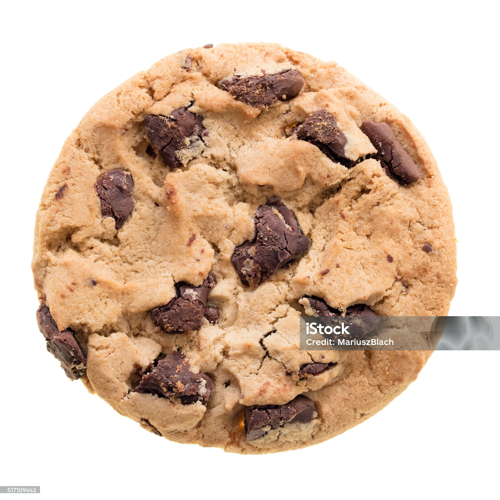

Home
Cookies

Description
This is a lovely old fashioned recipe to make chocolate chip cookies.
Once you take a bite of that gooey melty chocolate fresh from the oven with your entire house smelling like baked goods and loved, youll be
transported back to your childhood of mom making you fresh cookies just the way you like them
I have not seen my mom in many years. Not since the incident
It was a cold and rainy night. Not cookie baking weather at all. but that didn't stop me. Couldn't stop my Hunger.
I wish I could have known what was to come...
Ingredients
- Butter
- Flour
- Eggs
- Sugar (white and brown)
- Lots of chocolate chips
- Nuts if you want them idk im not ur mom
- lil salt
- Did I miss anything? No, I think we good
Steps
- Cream butter and sugars together
- Add eggs. slowly carefully. pick out any shells cause you were not careful enough you idiot
- Mix all that together if you haven't already. I sure hope you have
- Add sugar now and the lil salt
- I FORGOT THE BAKING SODA OH GOD ITS RUINED
- grieve
- Recover
- Add baking soda
- Stir
- Add chocolate chips and whatever else you think would go go in there
- Stir
- Divide onto a baking tray
- Bake
- You're done
- Please leave.